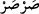
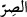
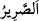
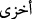

Çarşamba günü gibi- herhangi bir sebeple düşüklüğün giysiye ârız olacağını
kasdediyordur. Yoksa Allah’ın o günü düşük yarattığını değil… Dolayısıyla bu sözle
bizim gerideki beyanlarımız arasında bir çelişki yoktur. Öyle anlaşılıyor ki Allah Teâla
zamanın ve mekânın parçalarını farklı derecelerde yarattığı gibi, diğer varlıkları da
farklı farklı yaratmıştır.
Onları köklerinden söküp atan, şiddetli soğuğu ile -tıpkı ateşin sıcaklığı ile yakması
gibi- yakıp helâk eden “soğuk bir rüzgâr gönderdik.”
(
) kelimesi, (
) kökünden toplayıp bir arada tutan/dondurucu soğuk demektir; (
) kökünden ise eserken korkunç bir sesle uğuldayan kasırga demektir. Yani Sarsar
rüzgârı; korkunç bir ses ile uğuldar. Bu kasırganın, güneşin doğuş yönünden esen
“kabûl”ün; yani sabâ’nın tersi olan debûr olduğu da söylenmiştir. Buna göre debûr
güneşin battığı yönden esen rüzgâr demektir.
(
) lâfzında ‘sarr ‘kelimesi tekrarlanmaktadır; Râgıb der ki: sarr, bağlamaktır.
Surre de para konup bağlanan kese demektir. Sarsar ise, sarr kökünden olup sonuçta
bağlama mânâsı taşımaktadır. Çünkü soğukta bağlama/dondurma özelliği vardır. Soğuk,
şeklen birbirine benzeyenleri ayrıştırıp farklılık arzedenleri bir araya getirme vasfı
bulunan maddî bir şey olduğu için fiilî varlıklardandır.
“Âhiret azâbı elbette daha çok rüsvay edicidir.” Yani dünya azâbından elbetteki çok
daha rezil ve zelil edicidir; rezilliğin en kötüsüdür.
(Daha zelîl anlamındaki) (
) kelimesi de hakîkat anlamıyla azâba uğrayanların
vasfıdır. Bu vasfın azâba yakıştırılması, söz konusu zilletin azap yüzünden
gerçekleşmesi alâkası ile yapılmış mecâzî bir isnâddır.
“Onlara yardım da edilmez.” Ne dünyada ne de âhirette başlarındaki azâbı herhangi
bir şekilde savuşturarak yardım edilmeyecektir! Çünkü kendileri Allah’a ve O’nun
dînine yardım etmemişlerdir. Müminler ise zayıf da olsalar Allah onlara yardım eder;
çünkü kendileri Allah’a ve dînine yardım etmişlerdir. Allah Allah!.. Bir, şu zaafın güç
karşısındaki konumuna, bir de gücün zaaf karşısındaki durumuna bakın!
Bir hadiste: “Size içinizdeki zayıflar sâyesinde yardım edilmektedir”[31]
buyrulmuştur ki sizin zaferiniz için duâ eden zayıflar… demektir.
Hâlid b. Bermek: ‘Zayıfların mancınıklarından sakının’, demiştir ki duâlarından
demektir.
Fakîr (Bursevî) der ki: Âd kavmi, uzun boyları, iri cüsseleri, güç ve kuvvetleriyle
mağrur oldukları için dondurucu kasırga ile helâk edilmişlerdir; bu kadar güçlü kuvvetli
bir yapıya sahip olduklarına göre yerlerinde sâbit kalabileceklerini, onları yerlerinden
hiçbir belânın sökemeyeceğini zannetmişler, Allah da üzerlerine söz konusu kasırgayı
göndermiştir. Böylece havada savrulan tüye dönmüşlerdir.
Hz. Peygamber, rüzgâr estiği zaman dizlerinin üzerine çöker ve şöyle duâ edermiş:
“Allahım! Bu rüzgârı azap değil, rahmet kıl. Allahım, onu bize azap (rîh) değil;
rahmet (riyâh) eyle.”[32] Bu ifâdesiyle Rasûlûllah şunu anlatmak istemektedir: Kur’an-ı